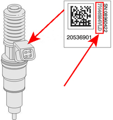
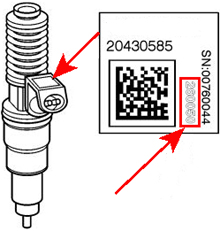

Due to tolerances when manufacturing the injectors the injected fuel quantity may deviate between the actual and calculated fuel quantity. After manufacture these deviations are determined for every injector and a calibration value is determined, the value is converted to a code that is stamped on the injectors. This code is programmed in the engine control unit for each cylinder. Using these codes, the engine control unit corrects the calculated fuel quantity individually for each cylinder and thus improves engine operation and exhaust emissions. With this function, new calibration values can be entered in the engine control unit when replacing injectors or engine control unit.
Note:
The injector code is located on the injector's label and consists of up to 9 characters (see figure below). It is important that the code that is entered is exactly the same as on the injector's label.
Test conditions:
Ignition on, engine off.
Parking brake applied.
Battery voltage above 20V.
Procedure:
Select injector to be programmed.
Start the function.
Check test conditions.
Check the injector code in question.
Select to enter new injector code or not.
Enter the new injector code stated on the new injector's label (see figure below).
Check that the new injector code is the same as the one on the new injector's label.
Turn off the ignition.
Wait 10 seconds.
Turn on the ignition.
Function done.
If the function fails, check the test conditions and try again.

